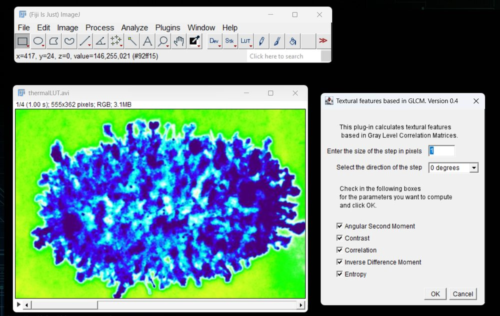

ImageJ
A régua digital
Software livre e gratuito para extrair geometria de imagens: calibrar a escala, segmentar a área de interesse, traçar as medidas e exportar os dados em mm ou cm².
- Ação
- Observação passiva
- Setup
- Software
- Alvo
- Animados e inanimados
- Saída
- Medidas geométricas